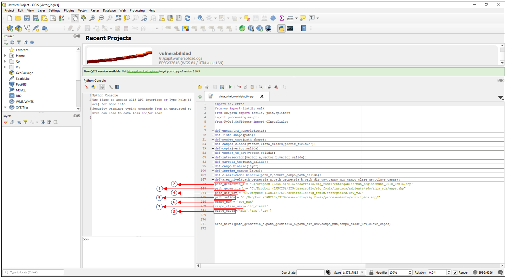

OWA¶
OWA (Ordered Weighted Average) es un análisis de aptitud territorial basado en procedimientos de Sistemas de Información Geográfica (SIG) y evaluación multicriterio (Malczewski, 2006). El análisis OWA genera un amplio rango de escenarios de aptitud territorial cambiando únicamente un parámetro lingüístico (alpha), relacionado con la rigidez en el cumplimiento de criterios preestablecidos.
OWA está definido por la siguiente ecuación:
Donde:
j: Criterio
u_{k}: Peso ordenado del criterio j
k: Orden asignado al peso del criterio j (renglón)
i: Pixel
z_ij: Valor ordenado del criterio j en el pixel i
alpha: Cuantificador lingüístico
Descargar el código de ejemplo
Requerimientos generales¶
Para asegurar la ejecución correcta del código es importante garantizar la instalación y funcionamiento de los siguientes elementos:
- Qgis 3.4 o superior y librerías de Osgeo4W
- Librerías python:
- Numpy
- Pandas
- GDAL
- reduce
Requerimientos generales de los insumos¶
Es importante que todas las capas raster cumplan con las siguientes condiciones:
- Misma proyección cartográfica
- Mismo tamaño de pixel
- Misma extensión de capa
Ejemplo¶
Procedimiento¶
1. Abrir el código¶
Abrir el código owa_raster.py en Qgis 3.4 o superior, Para resolver algun duda al respecto, visualizar la guia
2. Rellenar el diccionario¶
Ingresar las capas raster de entrada con sus respectivos pesos a la función mediante un diccionario. Es importante seguir la estructura del siguiente ejemplo:
dicc_capas = {'capa_1':{'ruta':path_insumos +"biologica/v_acuatica_yuc/fv_v_acuatica_yuc.tif",'w':0.08},
'capa_2':{'ruta':path_insumos +"biologica/v_costera_yuc/fv_v_costera_distancia_yuc.tif",'w':0.42},
'capa_3':{'ruta':path_insumos +"fisica/ancho_playa_yuc/fv_distancia_playa_yuc.tif",'w':0.065},
'capa_4':{'ruta':path_insumos +"fisica/elev_yuc/fv_elevacion_yuc.tif",'w':0.435},
}
Donde:
- capa_#: Corresponde a la capa en el orden en que se agregó al diccionario,
- ruta : Corresponde a la ruta o path de la capa
- w : Corresponde al peso asociado a esa capa o criterio
Nota
Para adicionar una capa, agregar el consecutivo a la llave de la capa (en este caso capa_5). La línea quedaría de la siguiente forma:
“capa_5”:{“ruta”:path_tiff,”w”:#.###}, }
3. Indicar la capa maestra¶
El código transforma los datos tiff en arreglos matriciales. Es indispensable asociar cualquier capa de los insumos a la variable path_capa_maestra.
path_capa_maestra = "../../*.tif"
4. Declarar el EPGS¶
El EPGS es el código de referencia geoespacial que indica la proyección y el datum asociados a cada capa. Ingresar el código EPGS correspondiente a los insumos. Declarar el código en la variable EPSG
EPSG = 32616
5. Indicar el direcctorio de salida¶
Indicar el directorio donde guardarán los mapas de salida.
path_salida = "../../"
6. Verificar las variables asociadas a la función insumos_base¶
La función insumos_base recibe como parámetro el diccionario de capas y pesos. Esta función regresa una lista de dataframes de las capas y una lista de pesos, por default se llaman capas y w, respectivamente.
Nota
El nombre del diccionario (establecido en el paso #2) debe coincidir con el que recibe la función insumos_base.
capas, w = insumos_base(dicc_capas)
7. Indicar los valores de alpha¶
El código está programado para recibir una lista de valores de alpha y generar un mapa por cada alpha declarado en dicha lista. Declarar los valores de alpha en la variable owa_alphas.
owa_alphas = [0.0001,0.1,0.5,1.0,2.0,10.0,1000.0]
8. Verificar que todo esté correcto en la función genera_owa¶
La función genera_owa recibe las variables declaradas.
genera_owa(capas,w,owa_alphas,path_capa_maestra,EPSG,path_salida)
Bibliografía¶
Malczewski, J. (2006). Ordered weighted averaging with fuzzy quantifiers: GIS-based multicriteria evaluation for land-use suitability analysis. International Journal of Applied Earth Observation and Geoin-formation, 8 ,270-277.
Documentación dentro del código¶
-
owa_raster.array_to_raster(array, path_salida, dimension, geotransform, EPSG)[fuente]¶ Esta función transforma una arreglo matricial en un archivo tiff
Parámetros:
-
owa_raster.calculo_owa(df, w, alpha=0.5)[fuente]¶ Esta función aplica al dataframe de salida de la función insumo_owa la función owa_df, dada una lista de valores, lista de pesos y un valor de alpha.
Parámetros: Devuelve: nombre del campo, dataframe que contiene el valor de owa para el alpha dado
Tipo del valor devuelto: str, pandas data frame
-
owa_raster.genera_owa(capas, w, owa_alpha, path_capa_maestra, EPSG, ruta_salida)[fuente]¶ Esta función calcula OWA, dada una lista de capas, pesos y lista de valores de alpha, para cada alpha dada generará una capa.
Parámetros: - capas (pandas.core.frame.DataFrame) – lista de dataframes, salida de la funcion insumos_base
- w (list) – lista de pesos, salida de la función insumos_base
- owa_alpha (list) – lista de valores de alpha
- path_capa_maestra (str) – path de la capa en formato tiff
- EPSG (int) – Identificador de Referencia Espacial
- ruta_salida (str) – Directorio de salida de las capas
-
owa_raster.insumo_owa(capas, pesos)[fuente]¶ Esta función junta todas las capas en un solo dataframe ,la salida de esta función tiene asociado un id que conserva desde el origen y una columna v que contiene una lista de los valores de capa pixel.
Parámetros: Devuelve: data frame que contiene los valores de los pixeles en una lista
Tipo del valor devuelto: pandas data frame
-
owa_raster.insumos_base(dicc)[fuente]¶ Esta función recibe un diccionario y regresa una lista de data frames y una lista de pesos
Parámetros: dicc (dict) – Diccionario con la estructura solicitada Devuelve: un lista de dataframes (capas) y una lista de pesos (w) Tipo del valor devuelto: list
-
owa_raster.juntar(left, right)[fuente]¶ Función que junda dos dataframes a partir de la columna “id”
Parámetros: - left (pandas dataframe) – Dataframe A
- right (pandas dataframe) – Dataframe B
Devuelve: df unido
Tipo del valor devuelto: pandas dataframe
-
owa_raster.owa(df, a, w, alpha=1)[fuente]¶ Esta función calcula OWA dado un dataframe y un valor de alpha
Parámetros: Devuelve: valor de owa
Tipo del valor devuelto:
-
owa_raster.owa_df(v, w, alpha=1)[fuente]¶ Esta función recibe una lista de valores, pesos y valor de alfa, los agrega a un dataframe que es ingresado a la función owa para calcular el valor
Parámetros: Devuelve: valor de OWA
Tipo del valor devuelto: